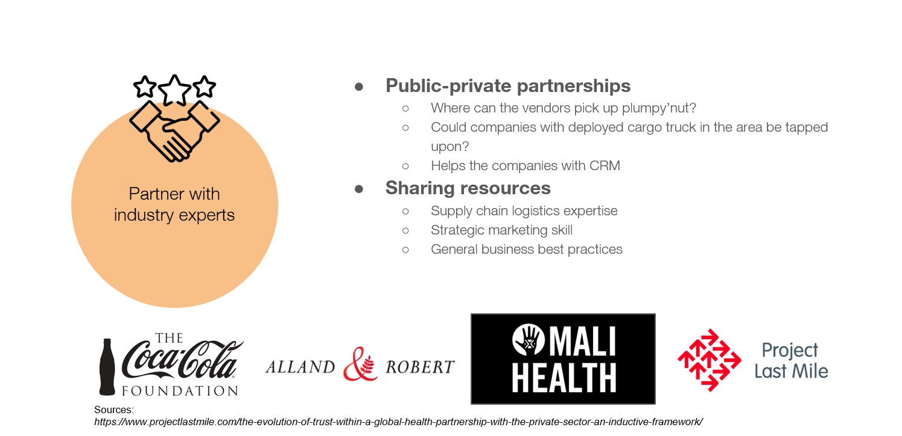
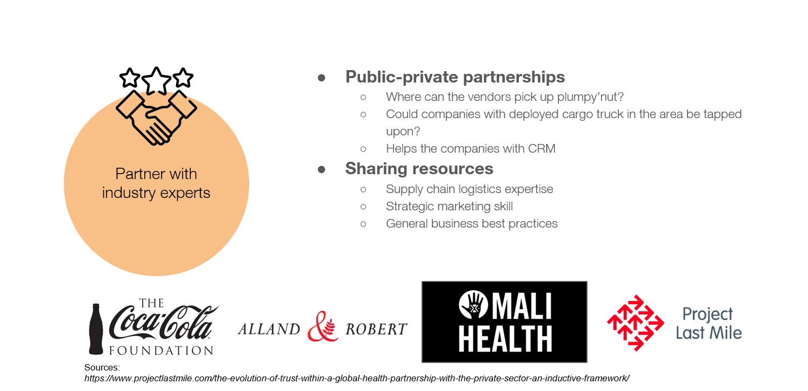

MUAC Challenge
Increasing malnutrition screening in Nara, Mali
Daniel Feist, Dishi Gautam, Kedrick Brown, Kevin Gao

 



What I did
- Research
- Design
- Discussion
50 million children around the world suffer from acute malnutrition, and nearly 18 million of those children live in conflict and crisis-affected contexts in which the IRC operates.
...
For children, being malnourished can lead to a range of health problems and can be fatal — when severely malnourished, their risk of death increases up to eleven-fold. A cure exists — a package of peanut-based paste, delivered through daily doses over a few months — but the system to deliver it is inefficient, making treatment inaccessible for 80% of the children who need it. The IRC believes it can transform the sector and reach more malnourished children by simplifying life-saving treatment and putting it in the hands of affected families and communities.
One commonly used tool to identify malnutrition and monitor its progression over time is the Mid-Upper Arm Circumference (MUAC) tape, a band that wraps around a child’s arm to measure lean muscle mass (Historically, the MUAC tape was used by Community Health Workers (CHWs), however the IRC is promoting a 'Family MUAC' approach where mothers (or other family members/caregivers), are trained to detect cases earlier. By empowering mothers to manage their children's health, this can lead to less hospitalizations and frees up CHWs to have more time to carry out other tasks.
Despite its simplicity, the promise of the MUAC tape has not been fulfilled. Health facilities have not seen children referred by caregivers in the numbers expected with data showing that in areas where 90% of women are trained, only 20% of referrals are from families, with some women saying they only used the tape once and some never at all.
The reasons of this are complex, ranging from unfamiliarity with the MUAC tape to stigma related to having a child who is malnourished to families. IRC teams are using human-centered design and behavioral insights to better understand caregivers’ behaviors and barriers to ensuring they can successfully screen their children. This includes looking closely at every step in the caregivers’ journey, from the moment caregivers become aware of the MUAC tape to when they seek treatment for their malnourished child.